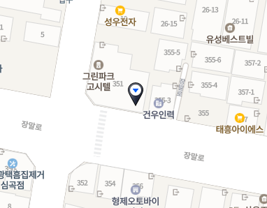
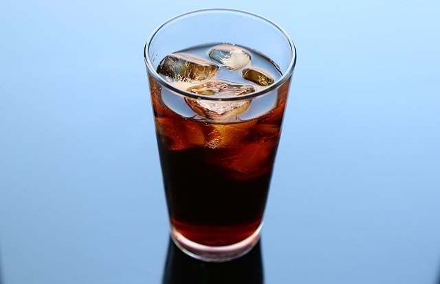

영업 안내

영업 시간 : 오전 11시 ~ 오후 7시
휴무 : 매주 월요일
오시는 길
부천시 장말로 000-0
부천 대학로 입구 앞
오늘의 추천
핸드드립 아이스커피
- 1인분 기준으로 서버에 각얼음 5조각(한조각의 20cc) 넣고 추출을 시작한다.
- 평상시 보다 원두의 양은 2배 정도 (20g)와 추출액은 얼음 포함해서 200cc까지 내린다.
- 아이스 잔에 얼음 6~7개 섞어서 시원하게 마신다
영업 시간 : 오전 11시 ~ 오후 7시
휴무 : 매주 월요일
부천시 장말로 000-0
부천 대학로 입구 앞